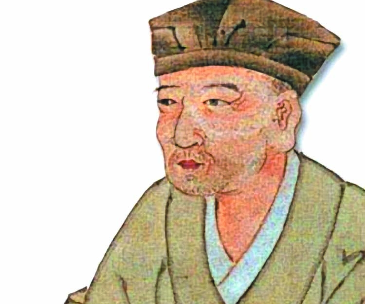

Tytuł: Stepy akermańskie
Autor: Adam Mickiewicz

Zwrotka 1
Wpłynąłem na suchego przestwór oceanu,
Wóz nurza się w zieloność i jak łódka brodzi,
Śród fali łąk szumiących, śród kwiatów powodzi,
Omijam koralowe ostrowy burzanu.
Zwrotka 2
Już mrok zapada, nigdzie drogi ni kurhanu;
Patrzę w niebo, gwiazd szukam przewodniczek łodzi;
Tam z dala błyszczy obłok? tam jutrzenka wschodzi?
To błyszczy Dniestr, to weszła lampa Akermanu.
Tytuł: نزار قبّاني,أُحِبُّك جدًّا
Autor: Nizar Qabbani

Zwrotka 1
أحبك جدًا
وأعرف أن الطريق إلى المستحيل طويـل
وأعرف أنك ست النساء
وليس لدي بديـل
وأعرف أن زمان الحنيـن انتهى
ومات الكلام الجميل
Zwrotka 2
فماذا أقول؟
أحبك جدًا…
أحبك جدًا وأعرف أني أعيش بمنفى
وأنت بمنفى
Tytuł: 俳句
Autor: Matsuo Basho
Zwrotka 1
冬ごもり
きくこともせず
山の雨
Zwrotka 2
枯野に
ほおりいづる
一葉風